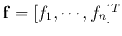
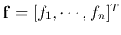
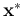
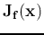
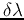

Next: Interior Point Methods for
Up: interior
Previous: interior
We first consider using the central path method to solve
the following inequality constrained optimization problem:
The  inequalty constraints can be expressed in vector form as
where
.
The Lagrangian of the problem is
inequalty constraints can be expressed in vector form as
where
.
The Lagrangian of the problem is
and the KKT conditions for  and
 to be
solution of this problem are:
to be
solution of this problem are:
We can use the central path method to find the solution .
To do so, we first introduce an indicator function:
and then convert the original optimization problem into another
optimization problem with a new objective function but no constraints:
Here the indicator function can be considered as a penalty for each
constraint
if it is violated. However, as such a
penalty function is not smooth and therefore not differentiable, it
is approximated by the following function which approaches
when a parameter approaches zero:
Now the objective function becomes:
where , called the logarithmic barrier function, is
defined as:
which is smooth and differentiable. The solution that
minimizes the new objective function should satisfy
We further define as a function of as well as :
or in matrix form
where
and
, then the above
becomes
where
 is the Jacobian matrix of the constraint
function
:
The corresponding dual Lagranian is:
and the solution
that minimizes
can be found by solving the above two equations
of both varialbes and :
using the Newton-Raphson method.
Specifically, in each step of the iteration, we find the increments
and
 by solving the following linear
equation system:
where the 2 by 2 block matrix on the left is the Jacobian of the function
combining the two functions above, with respect to both variables and
. We then update the two variables to get
and
based on their previous values
and . The iteration will approach the solutions  and
(both are functions of parameter ) that minimize
the dual Lagrangian
corresponding to the specific
:
and
(both are functions of parameter ) that minimize
the dual Lagrangian
corresponding to the specific
:
The difference
is the duality gap which approaches zero when
 . Also,
the solution and
satisfies the KKT conditions:
. Also,
the solution and
satisfies the KKT conditions:
which become the same as the KKT conditions for the original problem when
.
The given inequality-constrained optimization problem can now be be solved
by the central path method. It starts from an initial point
inside the feasible region with an initial , and approaches the
solution on the boundary iteratively. In each iteration (outer), the value
of the parameter is increased from the prevous value, and the best
solution corresponding to this is obtained through the
iteration (inner) of the Newton-Raphson's method. Eventually, when
, approaches some point on the boundary,
at which is minimized subject to the inequality constraints.
Next: Interior Point Methods for
Up: interior
Previous: interior
Ruye Wang
2016-10-04